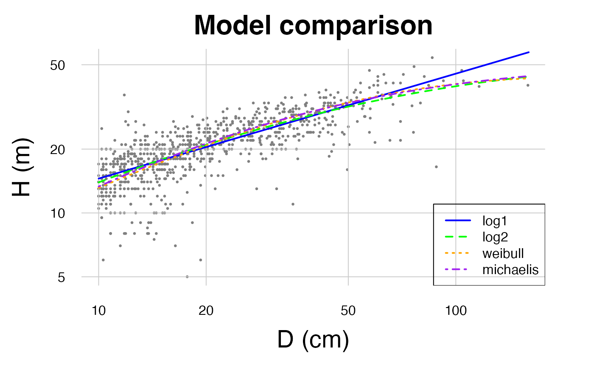
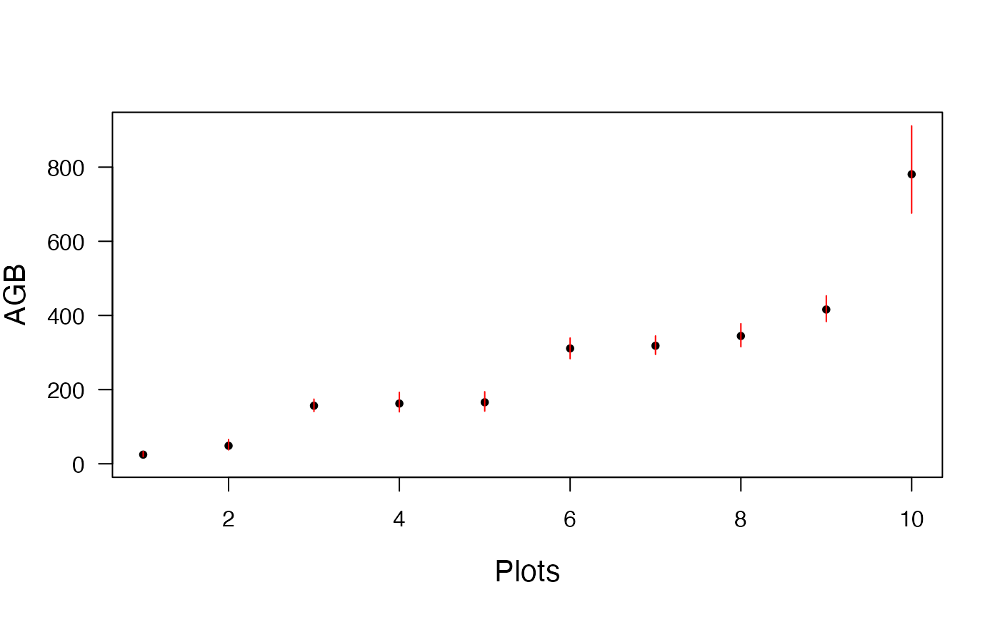

#Load BIOMASS and datasets Install BIOMASS (to be done once)
install.packages("BIOMASS")Load the package
Load the two datasets stored in the package
## 'data.frame': 65889 obs. of 8 variables:
## $ plotId : chr "BSP1" "BSP1" "BSP1" "BSP1" ...
## $ treeId : chr "BSP1_1" "BSP1_2" "BSP1_3" "BSP1_4" ...
## $ family : chr "Fabaceae" "Fabaceae" "Fabaceae" "Fabaceae" ...
## $ genus : chr "Acacia" "Acacia" "Acacia" "Acacia" ...
## $ species: chr "sinuata" "sinuata" "sinuata" "sinuata" ...
## $ D : num 3.82 4.14 4.14 4.46 4.46 ...
## $ lat : num 14.4 14.4 14.4 14.4 14.4 ...
## $ long : num 74.9 74.9 74.9 74.9 74.9 ...## 'data.frame': 1051 obs. of 7 variables:
## $ plotId : chr "Plot1" "Plot1" "Plot1" "Plot1" ...
## $ genus : chr "indet" "Qualea" "Dicorynia" "Protium" ...
## $ species: chr "indet" "rosea" "guianensis" "cf_guianense" ...
## $ D : num 11.5 11.6 83.9 15 36.8 13.5 17.8 17.8 15.9 17.8 ...
## $ H : num 12 16 40 18 27 20 24 21 22 24 ...
## $ lat : num 4.07 4.07 4.07 4.07 4.07 ...
## $ long : num -52.7 -52.7 -52.7 -52.7 -52.7 ...Select 10 plots for illustrative purpose
selecPlot <- KarnatakaForest$plotId %in% c("BSP2", "BSP12", "BSP14", "BSP26", "BSP28", "BSP30", "BSP34", "BSP44", "BSP63", "BSP65")
KarnatakaForestsub <- droplevels(KarnatakaForest[selecPlot, ])#Retrieve wood density ##Check and retrieve taxonomy First, check for any typo in the taxonomy
Taxo <- correctTaxo(genus = KarnatakaForestsub$genus, species = KarnatakaForestsub$species, useCache = FALSE, verbose = FALSE)## Using useCache=TRUE is recommended to reduce online search time for the next query
KarnatakaForestsub$genusCorr <- Taxo$genusCorrected
KarnatakaForestsub$speciesCorr <- Taxo$speciesCorrectedIf needed, retrieve APG III families and orders from genus names
APG <- getTaxonomy(KarnatakaForestsub$genusCorr, findOrder = TRUE)
KarnatakaForestsub$familyAPG <- APG$family
KarnatakaForestsub$orderAPG <- APG$orderWood density
Retrieve wood density using the plot level average if no genus level information is available
dataWD <- getWoodDensity(
genus = KarnatakaForestsub$genusCorr,
species = KarnatakaForestsub$speciesCorr,
stand = KarnatakaForestsub$plotId
)## The reference dataset contains 16467 wood density values## Your taxonomic table contains 196 taxaThe same but using the family average and adding other wood density values as references (here invented for the example)
LocalWoodDensity <- data.frame(
genus = c("Ziziphus", "Terminalia", "Garcinia"),
species = c("oenopolia", "bellirica", "indica"),
wd = c(0.65, 0.72, 0.65)
)
dataWD <- getWoodDensity(
genus = KarnatakaForestsub$genusCorr,
species = KarnatakaForestsub$speciesCorr,
family = KarnatakaForestsub$familyAPG,
stand = KarnatakaForestsub$plotID,
addWoodDensityData = LocalWoodDensity
)## The reference dataset contains 16470 wood density values## Your taxonomic table contains 196 taxaBelow the number of wood density value estimated at the species, genus and plot level:
# At species level
sum(dataWD$levelWD == "species")## [1] 2415
# At genus level
sum(dataWD$levelWD == "genus")## [1] 2957## [1] 394#Build height-diameter models
You may compare different models at once
result <- modelHD(
D = NouraguesHD$D,
H = NouraguesHD$H,
useWeight = TRUE
)## To build a HD model you must use the parameter 'method' in this function
kable(result)| method | color | RSE | RSElog | Average_bias |
|---|---|---|---|---|
| log1 | blue | 4.305059 | 0.2231136 | 0.0042275 |
| log2 | green | 4.222718 | 0.2215495 | 0.0031217 |
| weibull | orange | 4.307951 | NA | 0.0028240 |
| michaelis | purple | 4.294488 | NA | 0.0145642 |
Compute the local H-D model with the lowest RSE
HDmodel <- modelHD(
D = NouraguesHD$D,
H = NouraguesHD$H,
method = "log2",
useWeight = TRUE
)Compute models specific to given stands
HDmodelPerPlot <- modelHD(
D = NouraguesHD$D, H = NouraguesHD$H, method = "weibull",
useWeight = TRUE, plot = NouraguesHD$plotId
)## Warning in par(oldpar): calling par(new=TRUE) with no plot
ResHD <- t(sapply(HDmodelPerPlot, function(x) c(coef(x$model), RSE = x$RSE)))
kable(ResHD, row.names = TRUE, digits = 3)| a | b | c | RSE | |
|---|---|---|---|---|
| Plot1 | 43.673 | 29.629 | 0.987 | 4.503 |
| Plot2 | 372.412 | 47712.314 | 0.367 | 3.866 |
Retrieve height data
Retrieve height data from a local Height-diameter model (Note that using a HD model built on French guianan trees for Indian trees is only for illustrative purpose here)
dataHlocal <- retrieveH(
D = KarnatakaForestsub$D,
model = HDmodel
)Retrieve height data from a Feldpaush et al. (2012) averaged model
dataHfeld <- retrieveH(
D = KarnatakaForestsub$D,
region = "SEAsia"
)Retrieve height data from Chave et al. (2012) equation 6
Estimate AGB
Organize data
KarnatakaForestsub$WD <- dataWD$meanWD
KarnatakaForestsub$H <- dataHlocal$H
KarnatakaForestsub$Hfeld <- dataHfeld$HCompute AGB(Mg) per tree
AGBtree <- computeAGB(
D = KarnatakaForestsub$D,
WD = KarnatakaForestsub$WD,
H = KarnatakaForestsub$H
)Compute AGB(Mg) per plot (need to be divided by plot area to get Mg/ha)
AGBplot <- summaryByPlot(AGBtree, KarnatakaForestsub$plotId)Compute AGB(Mg) per tree without height information (Eq. 7 from Chave et al. (2014))
AGBplotChave <- summaryByPlot(
computeAGB(
D = KarnatakaForestsub$D, WD = KarnatakaForestsub$WD,
coord = KarnatakaForestsub[, c("long", "lat")]
),
KarnatakaForestsub$plotId
)Compute AGB(Mg) per tree with Feldpausch et al. (2012) regional H-D model
AGBplotFeld <- summaryByPlot(
computeAGB(
D = KarnatakaForestsub$D, WD = KarnatakaForestsub$WD,
H = KarnatakaForestsub$Hfeld
),
plot = KarnatakaForestsub$plotId
)Propagate AGB errors
Organize data
KarnatakaForestsub$sdWD <- dataWD$sdWD
KarnatakaForestsub$HfeldRSE <- dataHfeld$RSEPropagate error for all tree at once using the local HD model constructed above (modelHD), i.e. non-independent allometric errors will be assigned to all trees at each iteration, independently of plots.
resultMC <- AGBmonteCarlo(D = KarnatakaForestsub$D, WD = KarnatakaForestsub$WD, errWD = KarnatakaForestsub$sdWD, HDmodel = HDmodel, Dpropag = "chave2004")
Res <- summaryByPlot(resultMC$AGB_simu, KarnatakaForestsub$plotId)
Res <- Res[order(Res$AGB), ]
plot(Res$AGB, pch = 20, xlab = "Plots", ylab = "AGB", ylim = c(0, max(Res$Cred_97.5)), las = 1, cex.lab = 1.3)
segments(seq(nrow(Res)), Res$Cred_2.5, seq(nrow(Res)), Res$Cred_97.5, col = "red")
Using the Feldpaush regional HD averaged model (code only given)
resultMC <- AGBmonteCarlo(
D = KarnatakaForestsub$D,
WD = KarnatakaForestsub$WD,
errWD = KarnatakaForestsub$sdWD,
H = KarnatakaForestsub$Hfeld,
errH = KarnatakaForestsub$HfeldRSE,
Dpropag = "chave2004"
)
Res <- summaryByPlot(resultMC$AGB_simu, KarnatakaForestsub$plotId)
Res <- Res[order(Res$AGB), ]
plot(Res$AGB, pch = 20, xlab = "Plots", ylab = "AGB", ylim = c(0, max(Res$Cred_97.5)), las = 1, cex.lab = 1.3)
segments(seq(nrow(Res)), Res$Cred_2.5, seq(nrow(Res)), Res$Cred_97.5, col = "red")Per plot using the Chave et al. (2014) Equation 7 (code only given)
resultMC <- AGBmonteCarlo(
D = KarnatakaForestsub$D,
WD = KarnatakaForestsub$WD,
errWD = KarnatakaForestsub$sdWD,
coord = KarnatakaForestsub[, c("long", "lat")],
Dpropag = "chave2004"
)
Res <- summaryByPlot(resultMC$AGB_simu, KarnatakaForestsub$plotId)
Res <- Res[order(Res$AGB), ]
plot(Res$AGB, pch = 20, xlab = "Plots", ylab = "AGB", ylim = c(0, max(Res$Cred_97.5)), las = 1, cex.lab = 1.3)
segments(seq(nrow(Res)), Res$Cred_2.5, seq(nrow(Res)), Res$Cred_97.5, col = "red")Some tricks
##Mixing measured and estimated height values If you want to use a mix of directly-measured height and of estimated ones, you may do the following steps.
- Build a vector of H and RSE where we assume an error of 0.5 m on directly measured trees
NouraguesHD$Hmix <- NouraguesHD$H
NouraguesHD$RSEmix <- 0.5
filt <- is.na(NouraguesHD$Hmix)
NouraguesHD$Hmix[filt] <- retrieveH(NouraguesHD$D, model = HDmodel)$H[filt]
NouraguesHD$RSEmix[filt] <- HDmodel$RSE- Apply the AGBmonteCarlo by setting the height values and their errors (which depend on whether the tree was directly measured or estimated)
wd <- getWoodDensity(NouraguesHD$genus, NouraguesHD$species)
resultMC <- AGBmonteCarlo(
D = NouraguesHD$D, WD = wd$meanWD, errWD = wd$sdWD,
H = NouraguesHD$Hmix, errH = NouraguesHD$RSEmix,
Dpropag = "chave2004"
)
Res <- summaryByPlot(resultMC$AGB_simu, NouraguesHD$plotId)
Res <- Res[order(Res$AGB), ]
plot(Res$AGB, pch = 20, xlab = "Plots", ylab = "AGB (Mg/ha)", ylim = c(0, max(Res$Cred_97.5)), las = 1, cex.lab = 1.3)
segments(1:nrow(Res), Res$Cred_2.5, 1:nrow(Res), Res$Cred_97.5, col = "red")##Add your tricks Please contact Maxime (maxime.rejou@gmail.com) if you would like to add here a code that may be useful for users (code authorship will be respected)